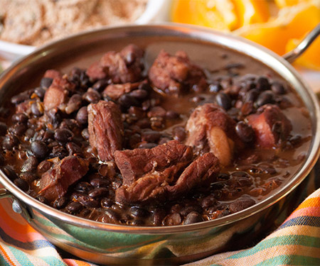
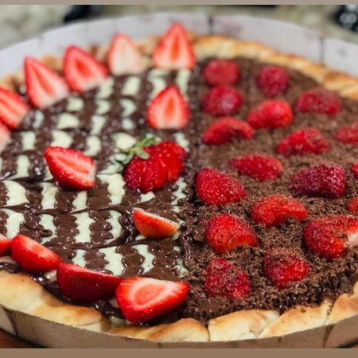
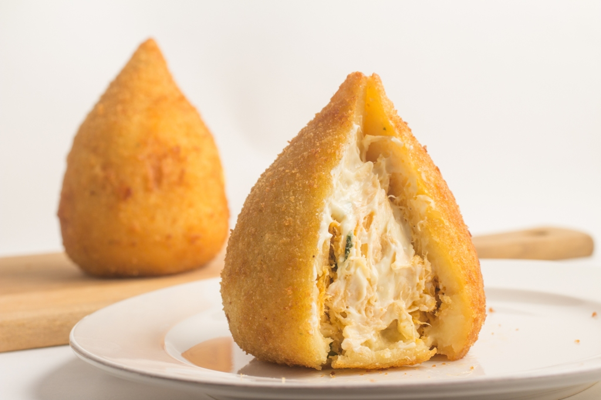

Feijoada
Brazilian Feijoada is a black bean and pork stew that is often served with farofa, toasted cassava flour. This comfort food is sometimes called the national dish of Brazil.

Estrogonofe de Carne
Estrogonofe de Carne is the Brazilian version of the famous Russian dish Beef Stroganoff. It is generally served with shoe-string potatoes and white rice

Pizza Doce
Pizza doce (also known as dessert pizza) is a very popular food in Brazil - even their fast food pizza franchises offer sweet pizzas.

Coxinha
A popular street food snack in Brazil, coxinha is savory dough filled with creamy chicken and fried to golden, crispy perfection.